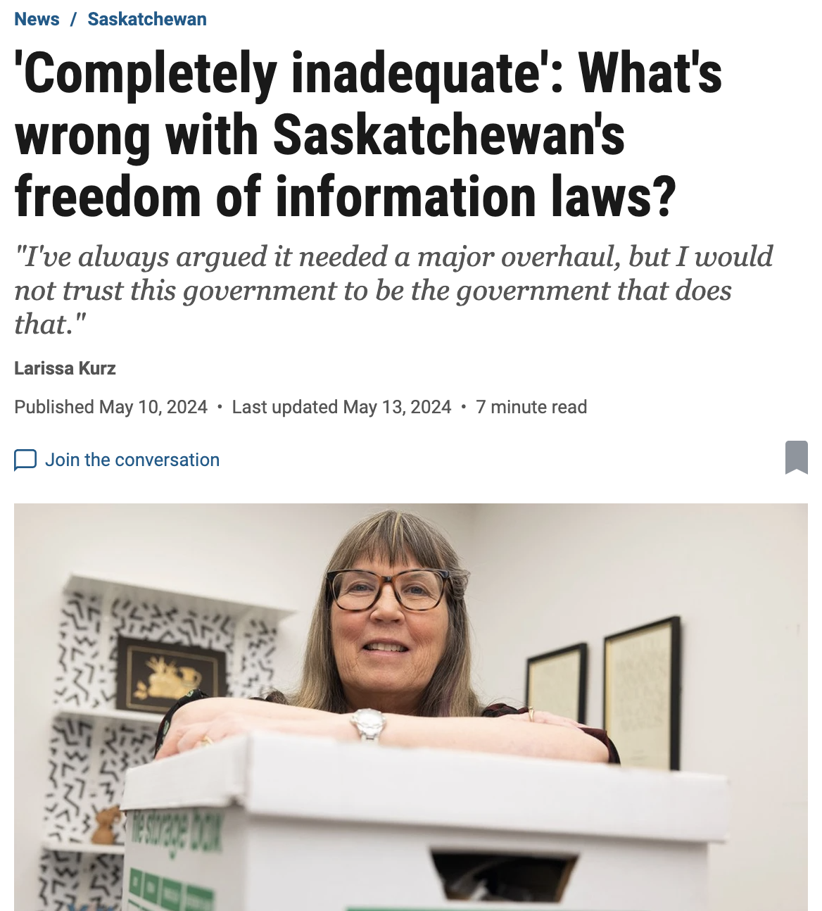
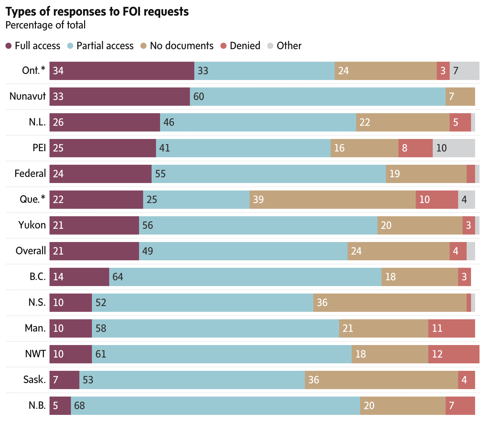
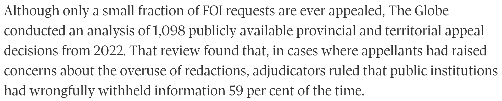
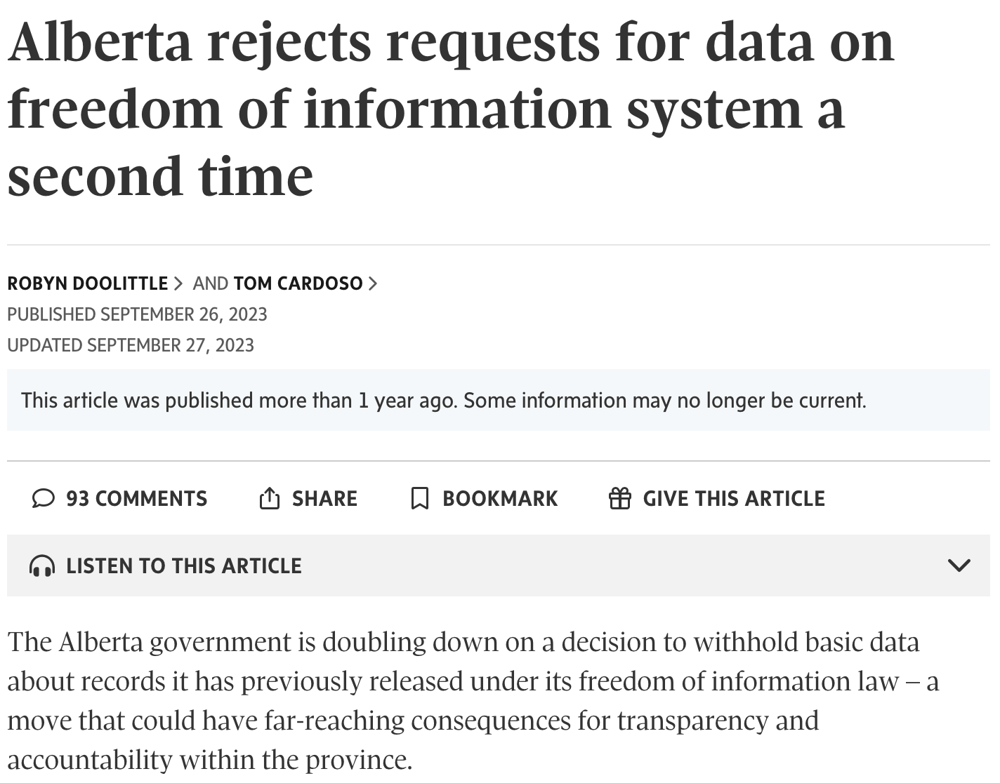

FOI week @ JRN315/JN8402
About me

Tom Cardoso, investigative reporter
at The Globe and Mail (and FOI power user)
Also: I spent the better part of two years investigating the FOI system, a reporting project called Secret Canada.
Today’s agenda
Documents, documents, documents
What good are documents?
Or: Why not just human sources?
Documents are useful because they:
- Are usually attributed to someone.
- Usually have specific dates, carry metadata, etc.
- Are often contemporaneous to the events they’re capturing.
- Give insight into a person or organization’s thinking.
- Often point to new reporting avenues worth pursuing.
- Are often more reliable than human sources.
The document state of mind:
“Developing a document state of mind means constantly wondering what documents are out there and laying the groundwork to get them. Reporters who can start seeing the world this way empower themselves and open a whole new universe of possibilities.”
Note: If you’re curious to learn more, this chapter is useful.
While reporting, always bear in mind: Most things are documented, to some extent.
- Government and regulatory documents (open or via FOI)
- Securities filings for publicly-traded companies
- Corporate filings (incorporation, directors, sometimes ownership)
- Court filings (lawsuits, criminal cases, reviews, court-mandated orders like evictions, etc.)
- Bankruptcy records
- Political donations
- Property records
- Liens (outstanding debts on cars, homes, businesses, etc.)
- Social media
- Website registration information
- Etc.
Q: Okay, but how do you find documents?
A: You’re a document detective. You’ll need to think deductively and inductively.
Deduction
Starting with a hypothesis and testing it through evidence. Top-down.
Example
You receive a tip that a city councillor is accepting gifts in exchange for favourable zoning decisions. To test that theory, you might first collect all decisions that this councillor brought forward or voted on. Then, you might ask: Which companies benefited from those decisions? Then, see if there are connections between the company and the councillor on Facebook, LinkedIn, etc. You could also FOI the councillor’s itinerary, their email correspondence (using the company names as keywords, etc.).
Induction
Starting with observations and arriving at a hypothesis. Bottom-up.
Example
For fun, you have been using a browser extension to scrape GTA Update, a website that lists police and fire calls for service. While analyzing the data, you notice several calls in recent months to a downtown construction site. You wonder if they have a workplace safety problem. You learn the WSIB has a “safety check” service, and find the company has a higher injury rate than some other local companies of similar size. Next, you interview current and former workers, and find out this began when the company was bought out two years ago by a private equity firm, so you pull their corporate filings… And on it goes.
In practice, you won’t use just induction or deduction. You’ll use both and jump back and forth between them on any given story. A hypothesis begets records, which beget observations, which beget new hypotheses, etc.
You don’t need to know everything about what kinds of documents are out there to have a “document state of mind.” You just need to think about what information a person or organization is leaving behind.
To that point, another useful technique:
The “circle of light.”
Exercise:
Thinking deductively and inductively about document trails.
Evictions
Given the national housing shortage, you wonder if more people are getting evicted in Ontario than in past years. After some quick searching, you learn the province doesn’t seem to track evictions.
What next? 👇
Enter the Landlord and Tenant Board, a tribunal which processes housing dispute applications, including for evictions.
What next? 👇
You theorize that they must somehow keep track of the applications they receive. You ask for a copy of their tracking system in an Excel format. They send it to you! The data they sent doesn’t list specific addresses because of privacy concerns… but does have postal codes.
What next? 👇
You speak with a few experts who explain how the eviction process works. To execute an eviction, you need to make a court application. You hypothesize: Evictions must thus be court records. Which means they are public. Which means you can request them!

Freedom of information:
An overview
What is FOI?
A legal mechanism that allows you to make official requests for records held by public bodies.
FOI exists for the sake of transparency, yes, but also out of operational necessity. Sometimes, you might need a government document for something in your own life. This is often the way to get it.
Who’s filing requests?
Federal access request stats (excluding IRCC), 2023-24
Which bodies can you file to?
- Government ministries and agencies
- Crown corporations
- Police forces
- Health authorities
- Universities
- Hospitals
- Transit systems
- Securities commissions
- And more!
What kinds of records can you get?
- Internal reports
- Presentations
- Contracts
- Memos and briefing notes
- Datasets and databases
- Photos, videos, audio
- Emails
- Messages in Slack, Microsoft Teams, etc.
- Text messages
- Really, most kinds of “records”
What kinds of records can’t you get?
- Court files
- Police investigation files, unless they’re about you
- Records that would reveal commercial secrets for the government or a company (e.g. drug pricing)
- Records covered under cabinet confidentiality
- Records covered under solicitor-client privilege
- Records that are already sold in some form (e.g. corporate filings, property reports)
- Patient health records, unless they’re about you
- Personal information of other people
Access law and FOI jurisdictions (Canada, provinces and territories, municipalities, U.S., etc.)
Most countries have some kind of FOI/access law. Many have several!
This is the case in Canada. We have one set of laws per jurisdiction, meaning we have at least one law for each province and territory, plus the federal government. (Some jurisdictions, incl. Ontario, have two laws: One for provincial bodies, and one for municipal bodies.)
The feds split privacy and access into two laws.
For a breakdown, visit this guide to Canada’s FOI jurisdictions.
How does the system work, generally?
Cost
This varies by jurisdiction. Many places charge a filing fee, often $5. Others charge nothing.
Most jurisdictions may charge additional processing fees before you receive your records.
Some jurisdictions waive fees for journalists, academics, etc. In practice, I find this is almost never worth it in Canada, as the waiver process can take months.
Redactions
- Redactions are supposed to be used sparingly and specifically.
- Instead, they’re often painted with a wide brush.
- There are many types of exemptions, too many to go over individually. You’ll become familiar with them as you file more requests.
Appeals
- If you don’t agree with a redaction, time extension or other decision, you can appeal.
- Every jurisdiction has an appeal mechanism.
- Appeals are almost always free, except for Ontario, which has a $25 filing fee.
- Most jurisdictions have an information commissioner or ombudsman who can review decisions.
- Some jurisdictions have a tribunal — an FOI court.
- Appeals can take a long time. In Canada, they can easily take several months, if not years.
However… The system is broken.
Aging legislation
Response times aren’t what they should be

Everyone redacts at different rates
And the redactions are frequently unreasonable!
Commissioners are often disregarded

And governments are interpreting FOI law “creatively”
Enter: Secret Canada
Using FOI to investigate FOI.
Secret Canada was an exhaustive examination of Canada’s broken FOI systems, and the culmination of 18 months of investigative work. More than 1,000 FOIs, 200+ interviews and 100+ stories, blog posts and newsletters.
A project in two parts:
- An investigation
- A website
Investigation
Our reporting revealed that public institutions skirt FOI laws by overusing redactions, failing to meet legislated timelines and claiming “no records” exist when they do. And these institutions face few – if any – consequences for ignoring the precedents set by courts and information commissioners.

Some of our stories have looked at:
- Why FOI in Canada is broken, in a general sense
- How the federal ATI has been hijacked by the immigration system
- Canada’s “island of transparency”: the province of Newfoundland
- How other countries’ FOI systems work
- The toothlessness of watchdog bodies responsible for overseeing these laws
- The near-impossibility of accessing historical records via ATIP
- The lack of consequences for those breaking FOI laws
- The state of municipal FOI regimes
Website (secretcanada.com)

- A database of more than 400,000 completed FOI summaries for 600+ federal, provincial, territorial and municipal public bodies
- Educational material, including detailed guides on filing FOIs, navigating the system and appealing decisions
- A blog
Our database was constructed from hundreds of FOIs, filed to every major public body in the country. Ministries, municipalities, police, hospitals, universities, Crown corporations… the list goes on. And we’re currently filing our next round!


I spent a lot of time speaking with FOI experts across Canada. Several general trends jumped out:
- Public bodies have embraced a risk mitigation approach to FOI.
- Access teams are under-resourced almost everywhere.
- Many public bodies don’t give much thought to their duty to assist.
- Redactions are supposed to be used sparingly and specifically. Instead, they’re painted with a wide brush.
- The appeals system has been captured by lawyers and legal thinking. I recently received more than 700 pages of representations for an appeal in B.C. That’s crazy!
Break!
Filing your own FOIs
Preparation
Do some research on the topic or issue before you file. It really helps to know your material. Remember: Document state of mind!
Before you craft your request, you should be able to answer to the following questions:
- Which public body has the records I’m looking for?
- What types of records do I need?
- What date range (days? months? years?) do I want the public body to use as search parameters?
- What keywords should I use to describe the records I’m looking for?
- What kinds of records should I exclude from my request?
Other stuff to keep in the back of your mind:
- What kinds of records are kept by the public body? (e.g. environmental impact assessments if it’s an environmental agency, etc.)
- What kinds of records are likely to exist?
- What kinds of records are likely to be useful?
- What kinds of records are likely to be sensitive or controversial?
One additional question to consider, but by no means a requirement:
Which office within that public body would hold the records I’m seeking?
(Org. charts are often available online if you do some searching. The federal government has an online directory, GEDS, which is a good first stop.)
An important note:
Most inexperienced requesters ask for far too much. Keep your date range as tight as you can and specify only the records you want. And do not ask for emails or correspondence unless they are essential — these sorts of records vastly increase the complexity of your request, leading to delays and, possibly, fees.
Three magic words
It’s totally normal to feel out of your depth on a request. You’re not an expert on that public body, or on bureaucrat-ese. You likely don’t know the office responsible for the records. In fact, you may not even know if the records exist at all!
Example
You recently read a recent Toronto Police Service report that said use of force had grown by 4% year-over-year. You surmise (there’s that deduction!) that they must be tracking this in some systematic way to be able to arrive at that statistic, so you want copies of the most recent use of force reports. But you don’t know what those are called, or which office within TPS would have custody over them.
Don’t fret! This is where “duty to assist” kicks in.
Every jurisdiction’s FOI law has language that says the public body has to help you with your request. You’re not expected to be an expert in a given public body’s bureaucracy or record-keeping, after all. You can invoke the FOI coordinator’s duty to assist you during the process to help you get what you need.
Responsibility of government institutions
(2.1) The head of a government institution shall, without regard to the identity of a person making a request for access to a record under the control of the institution, make every reasonable effort to assist the person in connection with the request, respond to the request accurately and completely and, subject to the regulations, provide timely access to the record in the format requested.
Things you can ask an FOI coordinator for help with:
- Determining the right office to send a request to
- Help writing the language of the request based on what information you’re seeking
- Determining the right scope, both in terms of the date range and the types of records to be searched
- Re-scoping the breadth of your request based on how quickly you need the records
- Occasionally, ideas for other things you might be interested in asking for
Writing your letter
A few basic principles:
- Be specific
- Be clear
- Be concise
- Be polite
- Be reasonable
Do not try to write like a lawyer. Keep it simple. The people receiving this request need to be able to understand what you’re after.
If you aren’t sure what to ask for, don’t guess. Keep it vague for now; you can clarify during the next step. (More on that in a minute.)
Most letters follow a basic structure of
where-what-when.
Where
Which public body and office is receiving your request? In this paragraph, you’re doing your best to say where the record is.
“This is a freedom of information request for records held by the city planning department at the City of Toronto.”
What
What is your request about, and what kinds of records should be searched? You may also want to specify the format you want to receive records, if requesting something like videos (e.g. an .mp4) or spreadsheets (e.g. .csv or .xlsx).
“I am seeking all internal reports, memos and briefing notes concerning expropriations as a result of the Ontario Line’s construction.”
When
What is the time period to be searched? Remember: You should be as narrow as possible. In our case, there have been many expropriations for the Ontario Line going back years, so we can't request multiple years — that would likely result in thousands of pages of documents and cost hundreds or thousands of dollars.
“Records should span from January 1, 2025 to March 17, 2025.”
Putting it all together:
This is a freedom of information request for records held by the city planning department at the City of Toronto. I am seeking all internal reports, memos and briefing notes concerning expropriations as a result of the Ontario Line’s construction. Records should span from January 1, 2025 to March 17, 2025.
Important note: If you are mailing your request, don’t forget to include your name and contact information.
This is all a lot to remember, so we wrote a guide on filing requests as part of Secret Canada.
We also built an FOI letter generator, a fill-in-the-blanks tool that helps you craft requests for commonly-requested records.
Exercise:
Let’s write an FOI letter together.
Asylum claims
👇
I read a New York Times story over the weekend about an Indian Fulbright Scholar at Columbia University in New York City who fled to Canada to avoid detention by ICE after her visa was summarily revoked. I’m curious about whether people are claiming asylum in Canada from the U.S. at an increased rate. Let’s write an FOI to get at this info.
👇
Navigating the process once you’ve filed
I could probably talk about this for another 30 minutes because there are a million ways a request can go sideways — but it’s all very case-specific.
Instead, here are some general guidelines:
Call the FOI office once they acknowledge receipt
Once you’ve filed, you will get an acknowledgment letter. Those often include contact information for the FOI coordinator responsible for your request. (If it doesn’t, you can simply reply and ask for that information.) Building a rapport with this person often pays dividends later.
Put another way: Treat them like a source.
Requests are a negotiation
Every request is a negotiation between you and the FOI coordinator. (Which is why it helps to build that rapport!) You can ask to narrow or broaden the language, ask how many pages the coordinator expects will be responsive to the request, etc. If you have a budget — say, you want to spend no more than $30 in fees — you can tell them this and ask that they help properly scope your request.
👇
👇
Follow up
Every jurisdiction has a legislated timeline for responding to requests. When the deadline is approaching (more on how to track this in a minute), I will often follow up — a gentle reminder that I am aware my request is due soon.
Things that come up during the processing/negotiation phase:
- Time extensions
- Requests for clarifications
- Cost estimates
- Disputes over record formats (e.g. .pdf, or .xlsx?)
- And more!
We also wrote a guide on navigating the request process.
Other stuff
Stay organized
If you file more than a couple of requests, I strongly encourage you to track your requests using a spreadsheet. We made one in Google Sheets for Secret Canada, which we later open-sourced.
Always be filing (AKA “FOI Fridays”)
Filing FOIs is a bit like going to the gym — it sucks at first, but gets easier over time. Try to build it into your weekly or monthly workflow. A lot of journalists do “FOI Fridays,” in which they block off an hour on their calendar to think about a few FOI ideas and file requests. Once you have 10-20 requests or so going at once, the momentum will keep you going.
BE POLITE
On appeals
We’ll keep this quick: Appeals are a whole world unto themselves, and a bit too complicated to get into here. However…
We have a guide!
Other places to mine for documents
There are many other places to find documents without filing an FOI. Here are a few, with links:
- Court searches (Ontario, B.C., federal)
- Securities filings
- Corporate filings (Ontario, federal)
- Federal completed access requests database
- Secret Canada’s database of metadata on completed requests
- Open By Default’s database of federal access requests
- The Wayback Machine for looking up historical versions of websites
There’s also the document-oriented Google search:
site:*.gc.ca filetype:pdf OR filetype:ppt OR filetype:pptx OR filetype:doc OR filetype:docx OR filetype:xls OR filetype:xlsx
On piggybacks
Once an FOI has been released once, all of the work (collection, redaction, etc.) has been done. Which means you can re-request a completed file via FOI. That’s what the Secret Canada database does — it lists all the FOIs that have been released at more than 600 of Canada’s largest public bodies.
The feds allow you to re-request an FOI package without filing a new FOI. Others actually post the files online.
Shameless plug: If you’re requesting multiple records from the federal completed requests portal, I built a little tool to speed up the process.
Break!
Individual exercise
We are each now going to write (and hopefully file) an access request. We’ll be filing to Newfoundland, since it’s free, pretty fast and you can do it online.